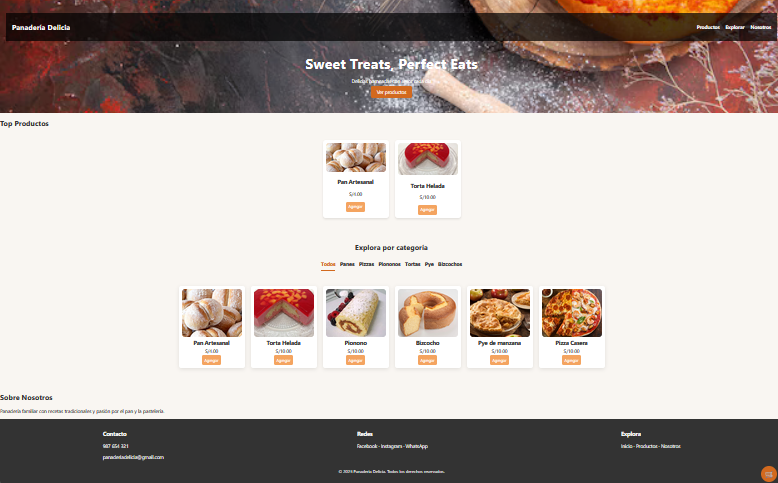
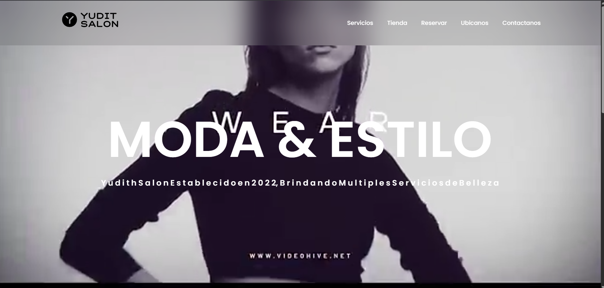

Proyectos

Landing Page de Panadería
Diseño simple y visualmente atractivo para una panadería local, optimizado para una excelente experiencia de usuario.

Página web de un salón de belleza
Un modelo de sitio web que destaca los servicios y la imagen de una microempresa: "Yudit Salon".

Software de la barbera OPEN-BARBER
Un modelo de software con inicio de sesion, registro de usuarios, historial de venta, generador de citas y de venta de sevcios un modelo que es facil de entender y comprender por los usuarios.